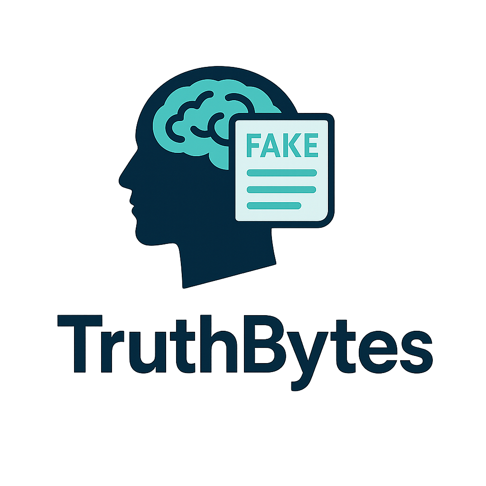

Over Ons
Wie zijn wij??

Wie zijn wij??
TruthBytes is een platform op het snijvlak van kunstmatige intelligentie, informatie en waarheid.
In een wereld waarin AI steeds krachtiger wordt en nepnieuws zich sneller verspreidt dan ooit, helpen wij mensen om feiten van fictie te onderscheiden.
Wat doen wij??
Wij maken complexe technologie toegankelijk en leggen uit:
Hoe AI werkt
Hoe informatie wordt gemanipuleerd
En hoe je misinformatie kunt herkennen en voorkomen
Wat is ons doel??
Onze missie is simpel maar essentieel:
mensen bewuster, kritischer en beter geïnformeerd maken in het digitale tijdperk.
We geloven dat:
toegang tot betrouwbare informatie een basisrecht is
technologie niet alleen slim, maar ook verantwoord gebruikt moet worden
iedereen de tools moet hebben om waarheid te herkennen
Waar staan wij voor??
Transparantie
Kritisch denken
Digitale geletterdheid
Kennis toegankelijk maken voor iedereen
Onze visie
In een toekomst waarin AI een steeds grotere rol speelt, willen wij bijdragen aan een samenleving waarin mensen:
niet alles geloven wat ze zien — maar begrijpen wat ze zien.
Hoe zijn wij begonnen??
TruthBytes is ontstaan vanuit een groeiende zorg:
in een wereld waarin informatie overal aanwezig is, wordt het steeds moeilijker om te bepalen wat waar is en wat niet.
Met de snelle opkomst van kunstmatige intelligentie — van AI gegenereerde teksten tot deepfakes — werd die uitdaging nog groter.
Informatie kan tegenwoordig overtuigend klinken of echt lijken, zonder dat het daadwerkelijk klopt.
Vanuit die realiteit ontstond TruthBytes.